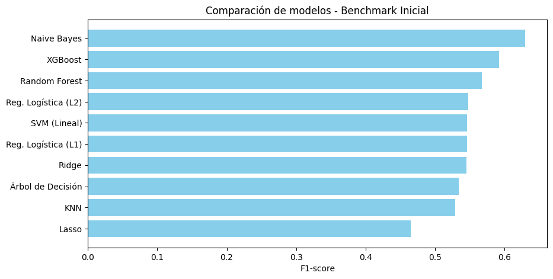

Benchamark#
Benchmark de Modelos Base
En esta etapa se construye un benchmark inicial de modelos de clasificación sobre el dataset de diabetes, antes de aplicar técnicas de balanceo o de optimización computacional. El objetivo es evaluar el desempeño predictivo base de diversos algoritmos y establecer una línea de comparación para las etapas posteriores.
Decisiones del Proceso#
Preprocesamiento con
ColumnTransformer:Se diferenciaron las variables numéricas y categóricas para aplicar transformaciones específicas.
A las variables numéricas se les imputaron valores faltantes con la mediana y se escalaron con
StandardScaler.A las variables categóricas se les aplicó imputación con la moda y luego codificación One-Hot Encoding, usando
handle_unknown='ignore'para evitar errores con categorías nuevas.
División del conjunto de datos:
Se separaron los datos en 80% entrenamiento y 20% prueba, estratificando por la variable objetivo para mantener la proporción de clases (desbalance cercano al 54%-46%).Modelos incluidos:
Se entrenaron diez modelos representativos de distintas familias de algoritmos:Métodos basados en distancia: KNN
Probabilísticos: Naive Bayes
Modelos lineales: Regresión Logística (L1 y L2), Ridge, Lasso (SGD)
Árboles de decisión y ensamblados: Decision Tree, Random Forest, XGBoost
Máquinas de vectores soporte: SVM lineal
Todos los modelos fueron integrados dentro de un
Pipelinepara asegurar un flujo reproducible de preprocesamiento y entrenamiento.Métricas de evaluación:
Se midieron Accuracy, F1-score (para capturar el balance entre precisión y exhaustividad) y AUC (para evaluar la capacidad discriminante).
También se registró el tiempo de entrenamiento (en segundos) para posteriores comparaciones de eficiencia computacional.
import time
import numpy as np
import pandas as pd
import matplotlib.pyplot as plt
from sklearn.model_selection import train_test_split
from sklearn.preprocessing import StandardScaler, OneHotEncoder
from sklearn.compose import ColumnTransformer
from sklearn.pipeline import Pipeline
from sklearn.impute import SimpleImputer
from sklearn.neighbors import KNeighborsClassifier
from sklearn.naive_bayes import GaussianNB
from sklearn.linear_model import LogisticRegression, RidgeClassifier, SGDClassifier
from sklearn.tree import DecisionTreeClassifier
from sklearn.ensemble import RandomForestClassifier
from sklearn.svm import LinearSVC
from xgboost import XGBClassifier
from sklearn.metrics import accuracy_score, f1_score, roc_auc_score
# ========================
# 1. Carga de librerías
# ========================
# ========================
# 2. Cargar dataset
# ========================
df = pd.read_csv('data/raw/diabetic_data.csv')
# ========================
# 3. Crear variable objetivo binaria ('target')
# Será 1 si el paciente fue reingresado ('<30' o '>30'), y 0 si no ('NO')
# ========================
df['target'] = df['readmitted'].isin(['<30', '>30']).astype(int)
df.drop(columns=['readmitted'], inplace=True)
# ========================
# 4. Eliminar columnas irrelevantes
# ========================
cols_to_drop = [
"encounter_id", "patient_nbr", "weight", "payer_code", "medical_specialty"
]
df = df.drop(columns=cols_to_drop)
df = df.sample(frac=0.7, random_state=42)
# ========================
# 5. Separar variables predictoras y target
# ========================
X = df.drop(columns=["target"])
y = df["target"]
# ========================
# 6. Identificar tipos de variables
# ========================
num_cols = X.select_dtypes(include=["int64", "float64"]).columns
cat_cols = X.select_dtypes(include=["object"]).columns
# ========================
# 7. Crear transformadores
# ========================
num_transformer = Pipeline(steps=[
("imputer", SimpleImputer(strategy="median")),
("scaler", StandardScaler())
])
cat_transformer = Pipeline(steps=[
("imputer", SimpleImputer(strategy="most_frequent")),
("encoder", OneHotEncoder(handle_unknown="ignore", sparse_output=False))
])
# ========================
# 8. Combinar en un ColumnTransformer
# ========================
preprocessor = ColumnTransformer(
transformers=[
("num", num_transformer, num_cols),
("cat", cat_transformer, cat_cols)
])
# ========================
# 9. Dividir en train y test
# ========================
X_train, X_test, y_train, y_test = train_test_split(
X, y, test_size=0.2, random_state=42, stratify=y
)
print("Tamaño del train:", X_train.shape)
print("Tamaño del test:", X_test.shape)
print("\nDistribución de la variable objetivo (desbalance):")
print(y.value_counts(normalize=True))
Tamaño del train: (56988, 44)
Tamaño del test: (14248, 44)
Distribución de la variable objetivo (desbalance):
target
0 0.53845
1 0.46155
Name: proportion, dtype: float64
# =========================================
# 10. Carga de modelos
# =========================================
# =========================================
# 11. Definir modelos benchmark
# =========================================
modelos = {
"KNN": KNeighborsClassifier(n_neighbors=5),
"Naive Bayes": GaussianNB(),
"Reg. Logística (L2)": LogisticRegression(penalty="l2", max_iter=1000, n_jobs=-1),
"Reg. Logística (L1)": LogisticRegression(penalty="l1", solver="liblinear", max_iter=1000),
"Ridge": RidgeClassifier(),
"Lasso": SGDClassifier(loss="log_loss", penalty="l1", max_iter=1000, random_state=42),
"Árbol de Decisión": DecisionTreeClassifier(random_state=42),
"Random Forest": RandomForestClassifier(random_state=42, n_estimators=100),
"XGBoost": XGBClassifier(eval_metric="logloss", random_state=42, use_label_encoder=False),
"SVM (Lineal)": LinearSVC(random_state=42, max_iter=5000)
}
# =========================================
# 12. Entrenamiento y evaluación comparativa
# =========================================
resultados = []
for nombre, modelo in modelos.items():
print(f"\nEntrenando modelo: {nombre}")
# Pipeline: preprocesamiento + modelo
clf = Pipeline(steps=[
("preprocessor", preprocessor),
("classifier", modelo)
])
# Tiempo de entrenamiento
inicio = time.time()
clf.fit(X_train, y_train)
fin = time.time()
tiempo = fin - inicio
# Predicciones
y_pred = clf.predict(X_test)
# Algunos modelos no tienen predict_proba
if hasattr(clf.named_steps["classifier"], "predict_proba"):
y_proba = clf.predict_proba(X_test)[:, 1]
elif hasattr(clf.named_steps["classifier"], "decision_function"):
y_proba = clf.decision_function(X_test)
else:
y_proba = None
# Métricas
acc = accuracy_score(y_test, y_pred)
f1 = f1_score(y_test, y_pred, zero_division=0)
auc = roc_auc_score(y_test, y_proba) if y_proba is not None else np.nan
resultados.append({
"Modelo": nombre,
"Accuracy": round(acc, 3),
"F1-score": round(f1, 3),
"AUC": round(auc, 3) if not np.isnan(auc) else "N/A",
"Tiempo (s)": round(tiempo, 2)
})
# =========================================
# 13. Tabla comparativa
# =========================================
resultados_df = pd.DataFrame(resultados).sort_values(by="F1-score", ascending=False)
print("\n===== RESULTADOS BENCHMARK =====")
display(resultados_df)
Entrenando modelo: KNN
Entrenando modelo: Naive Bayes
Entrenando modelo: Reg. Logística (L2)
Entrenando modelo: Reg. Logística (L1)
Entrenando modelo: Ridge
Entrenando modelo: Lasso
Entrenando modelo: Árbol de Decisión
Entrenando modelo: Random Forest
Entrenando modelo: XGBoost
c:\Users\camil\anaconda3\envs\ML_VENV\lib\site-packages\xgboost\core.py:158: UserWarning: [17:57:48] WARNING: C:\buildkite-agent\builds\buildkite-windows-cpu-autoscaling-group-i-08cbc0333d8d4aae1-1\xgboost\xgboost-ci-windows\src\learner.cc:740:
Parameters: { "use_label_encoder" } are not used.
warnings.warn(smsg, UserWarning)
Entrenando modelo: SVM (Lineal)
===== RESULTADOS BENCHMARK =====
| Modelo | Accuracy | F1-score | AUC | Tiempo (s) | |
|---|---|---|---|---|---|
| 1 | Naive Bayes | 0.481 | 0.630 | 0.515 | 4.94 |
| 8 | XGBoost | 0.646 | 0.592 | 0.700 | 8.69 |
| 7 | Random Forest | 0.637 | 0.567 | 0.688 | 77.50 |
| 2 | Reg. Logística (L2) | 0.627 | 0.548 | 0.669 | 67.67 |
| 9 | SVM (Lineal) | 0.623 | 0.546 | 0.663 | 16.60 |
| 3 | Reg. Logística (L1) | 0.628 | 0.546 | 0.672 | 10.71 |
| 4 | Ridge | 0.623 | 0.545 | 0.662 | 7.87 |
| 6 | Árbol de Decisión | 0.573 | 0.534 | 0.570 | 19.17 |
| 0 | KNN | 0.581 | 0.529 | 0.610 | 2.81 |
| 5 | Lasso | 0.615 | 0.465 | 0.665 | 9.44 |
Análisis e Interpretación#
XGBoost y Random Forest destacan por su mayor capacidad predictiva (AUC ≈ 0.70), evidenciando su fortaleza para capturar relaciones no lineales y combinaciones de variables. Sin embargo, presentan costos computacionales elevados, especialmente el Random Forest.
Naive Bayes, aunque simple y con baja precisión global (Accuracy = 0.48), logra el F1-score más alto (0.63). Esto sugiere que es efectivo en la detección de la clase minoritaria, lo cual puede ser relevante en contextos médicos donde el recall o la detección de casos positivos es prioritaria.
Los modelos lineales (Regresión Logística, Ridge, Lasso, SVM) ofrecen un buen equilibrio entre interpretabilidad, tiempo y desempeño, con AUC entre 0.66 y 0.67. Estos modelos son útiles como referencia base para comparaciones posteriores con técnicas de regularización o balanceo.
KNN logra un desempeño moderado con bajo costo computacional, lo cual lo hace atractivo para entornos donde se prioriza la velocidad sobre la exactitud.
El Árbol de Decisión simple obtiene resultados más bajos, lo que confirma la necesidad de ensamblados como Random Forest o Boosting para mejorar su rendimiento.
plt.figure(figsize=(10, 5))
plt.barh(resultados_df["Modelo"], resultados_df["F1-score"], color='skyblue')
plt.xlabel("F1-score")
plt.title("Comparación de modelos - Benchmark Inicial")
plt.gca().invert_yaxis()
plt.show()

Conclusión#
Los resultados del benchmark inicial muestran que, sin técnicas de balanceo ni optimización, los modelos basados en árboles (especialmente XGBoost) logran el mejor desempeño general. No obstante, su mayor tiempo de cómputo y posible sobreajuste invitan a explorar las técnicas de balanceo de clases y optimización computacional en las siguientes fases del proyecto, con el fin de mejorar tanto la eficiencia como la equidad en la detección de casos positivos.